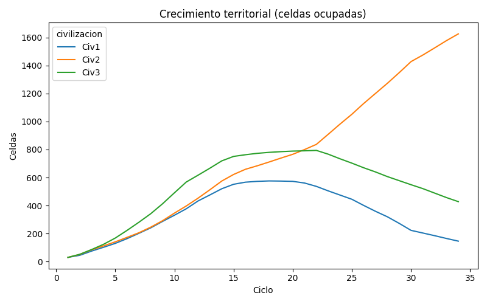
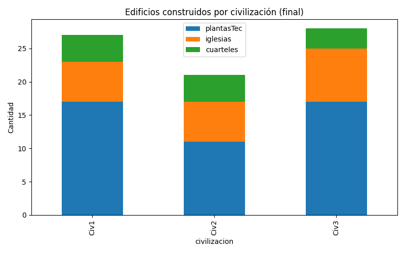
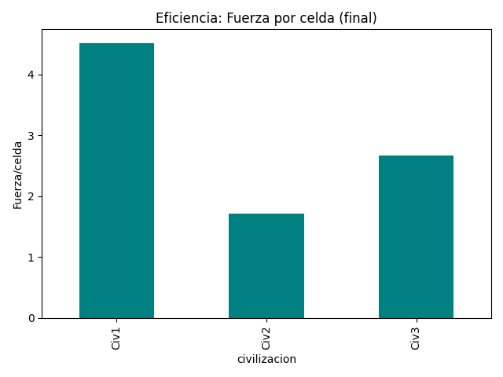
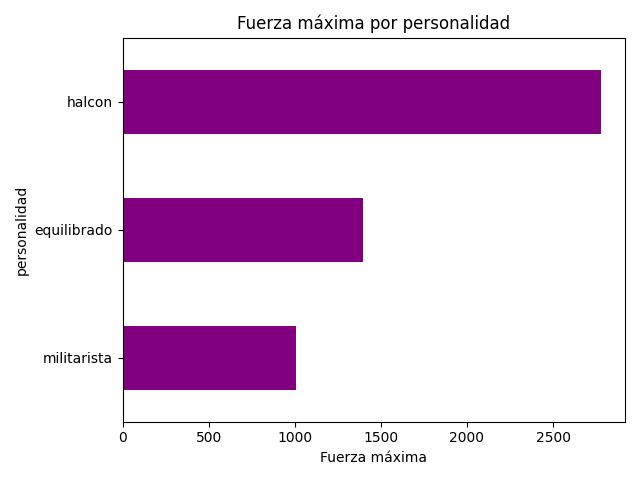
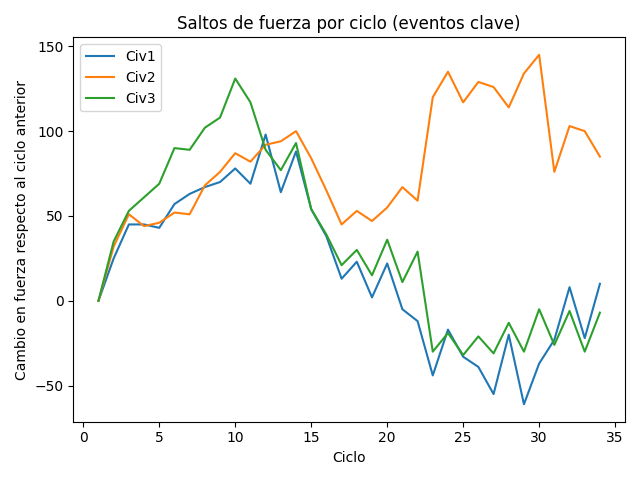
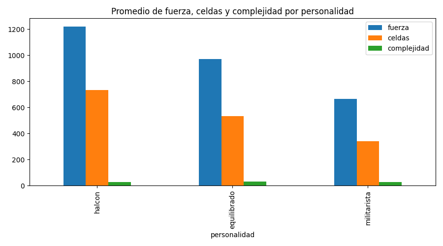
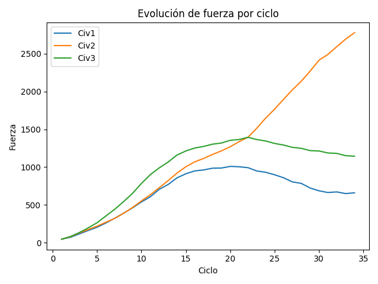

Análisis Civilizaciones: KPIs
1️⃣ Crecimiento territorial: ¿Cuántas celdas ocupó cada civilización en el tiempo?

2️⃣ Especialización: ¿En qué tipo de edificios se especializó cada civilización?

3️⃣ Eficiencia: ¿Qué civilización tiene más fuerza por celda ocupada al final?

4️⃣ Estrategia dominante: ¿Qué personalidad logra la mayor fuerza máxima?

5️⃣ Eventos clave: ¿En qué ciclos hubo grandes saltos de fuerza? (Guerras, conquistas)

6️⃣ Comparación entre personalidades: ¿Qué personalidad domina en fuerza, tamaño y complejidad?

7️⃣ Análisis temporal: ¿Cómo evolucionó la fuerza de cada civilización durante la simulación?
